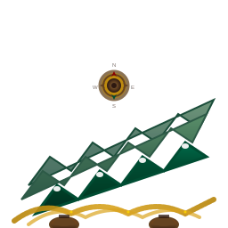

🚀 Morocco Trek Tours - Logo Export Guide
✅ Logo Symbol Successfully Extracted!
The logo now contains only the mountain, path, compass, and boot elements - all text has been removed.
The logo now contains only the mountain, path, compass, and boot elements - all text has been removed.
🎨 Logo Variants Created
Standard Logo
File: logo-symbol-only.svg
Size: 200x200px
Use: Websites, standard branding

Professional Logo
File: logo-symbol-professional.svg
Size: 256x256px
Use: Print, presentations, high-res
Compact Logo
File: logo-symbol-compact.svg
Size: 64x64px
Use: Favicons, mobile, social media
📐 Recommended PNG Export Sizes
16x16px
Favicons (very small)
32x32px
Small favicons
64x64px
Standard favicons, app icons
128x128px
Medium branding
256x256px
Large branding, social media
512x512px
High-res branding
1024x1024px
Print quality, large formats
2048x2048px
Ultra high-res print
🛠️ How to Export PNG from SVG
Method 1: Using Inkscape (Free)
# Install Inkscape first, then:
inkscape logo-symbol-professional.svg --export-width=512 --export-height=512 --export-type=png --export-filename=logo-512.png
Method 2: Using ImageMagick
# Convert SVG to PNG with specific size:
magick logo-symbol-professional.svg -background transparent -size 512x512 logo-512.png
# Or resize existing PNG:
magick logo-symbol-professional.svg -resize 256x256 logo-256.png
Method 3: Using Online Converters
Use services like:
- CloudConvert: cloudconvert.com/svg-to-png
- Convertio: convertio.co/svg-png
- Online-Convert: online-convert.com
Method 4: Browser-Based Export
// Open SVG in browser, then use developer tools:
const svg = document.querySelector('svg');
const canvas = document.createElement('canvas');
const ctx = canvas.getContext('2d');
const img = new Image();
img.onload = () => {
canvas.width = img.width;
canvas.height = img.height;
ctx.drawImage(img, 0, 0);
canvas.toBlob(blob => {
const url = URL.createObjectURL(blob);
const a = document.createElement('a');
a.href = url;
a.download = 'logo.png';
a.click();
});
};
img.src = 'data:image/svg+xml;base64,' + btoa(svg.outerHTML);
🎯 Quality Settings
⚠️ Important Quality Settings:
• Resolution: 300 DPI minimum for print
• Background: Transparent (PNG-32)
• Color Mode: RGB for web, CMYK for print
• Anti-aliasing: Enabled for smooth edges
• Resolution: 300 DPI minimum for print
• Background: Transparent (PNG-32)
• Color Mode: RGB for web, CMYK for print
• Anti-aliasing: Enabled for smooth edges
📋 File Organization
logo-project/
├── svg/
│ ├── logo-symbol-only.svg # 200x200 - Standard web use
│ ├── logo-symbol-professional.svg # 256x256 - High quality
│ └── logo-symbol-compact.svg # 64x64 - Compact use
├── png/
│ ├── logo-16.png # Favicons
│ ├── logo-32.png # Small favicons
│ ├── logo-64.png # Standard favicons
│ ├── logo-128.png # Medium branding
│ ├── logo-256.png # Large branding
│ ├── logo-512.png # High-res branding
│ └── logo-1024.png # Print quality
└── logo-variants-README.md # Documentation
🔍 Quality Verification
✅ Colors Match Original:
- Primary Green: #004d33
- Gold: #B8860B
- Brown: #8B4513
✅ Elements Preserved:
- Mountain ranges with gradients
- Trekking paths with dash patterns
- Compass rose with directional arrows
- Trekking boots with details
- Snow caps on mountain peaks
🎉 Ready for Production!
The logo symbol has been successfully extracted and is ready for use across all platforms and sizes.
The logo symbol has been successfully extracted and is ready for use across all platforms and sizes.